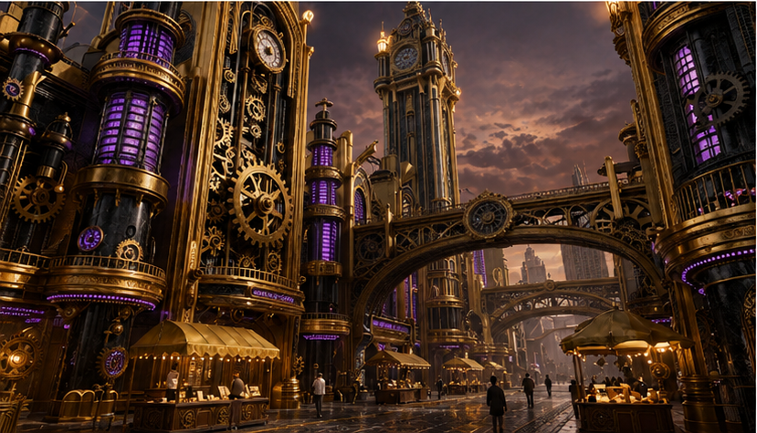
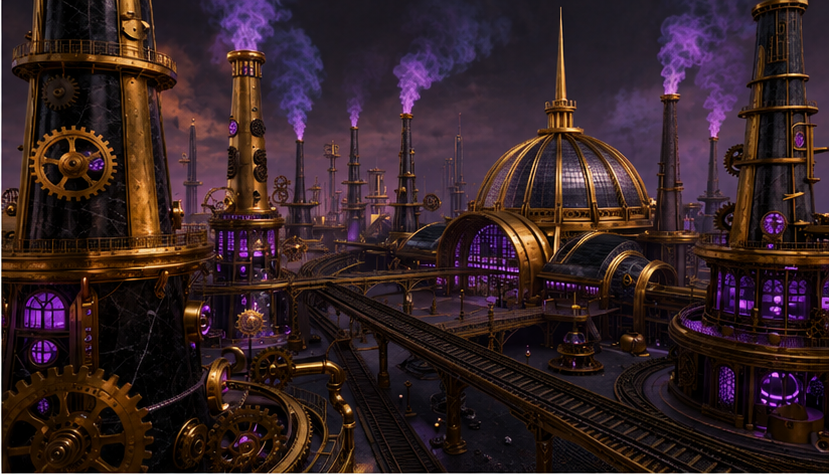

THE EXCHANGE CITADEL
Trade. Capital. Exchange.
ENTER THE CITADEL
CONTINUE CITADEL RUN
CHOOSE YOUR CITADEL RUN
Select how you want to enter The Exchange Citadel.

Standard Campaign
Full campaign across open-economy identities, exchange rates, policy effects, and Mundell-Fleming logic.
Timed Trial
Ten minutes. Correct answers advance. Misses push you back. Advance as far as you can.
Exam Drill
No bosses. No artifacts. No Realm progress. Just adaptive practice.

Legendary Mode
Full campaign. Legendary questions. The Citadel tests chained open-economy policy judgment.
BACK
FULLSCREEN
CITADEL MENU
Sound On
The Exchange Citadel
Acquired Artifacts
National Ledger
Policy Charter
Pen of Exchange
The Custodian
💾 Progress Saved Locally
Timed Trial
10:00
Citadel Warning
Continue
Cancel